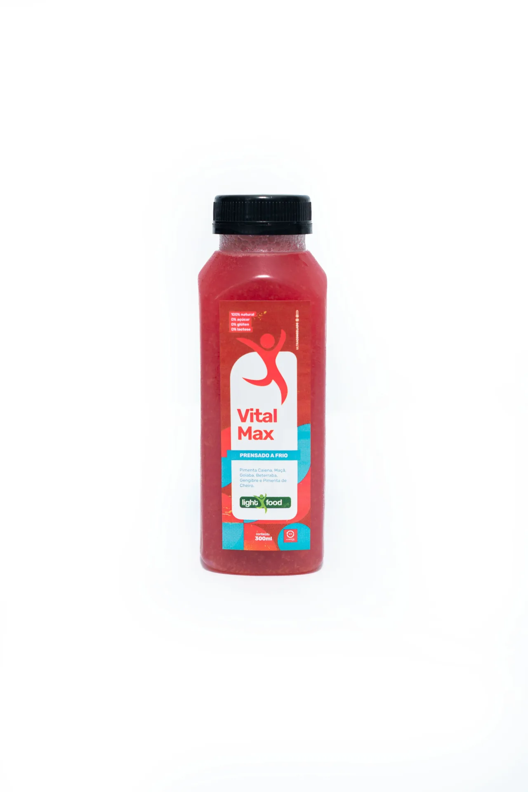
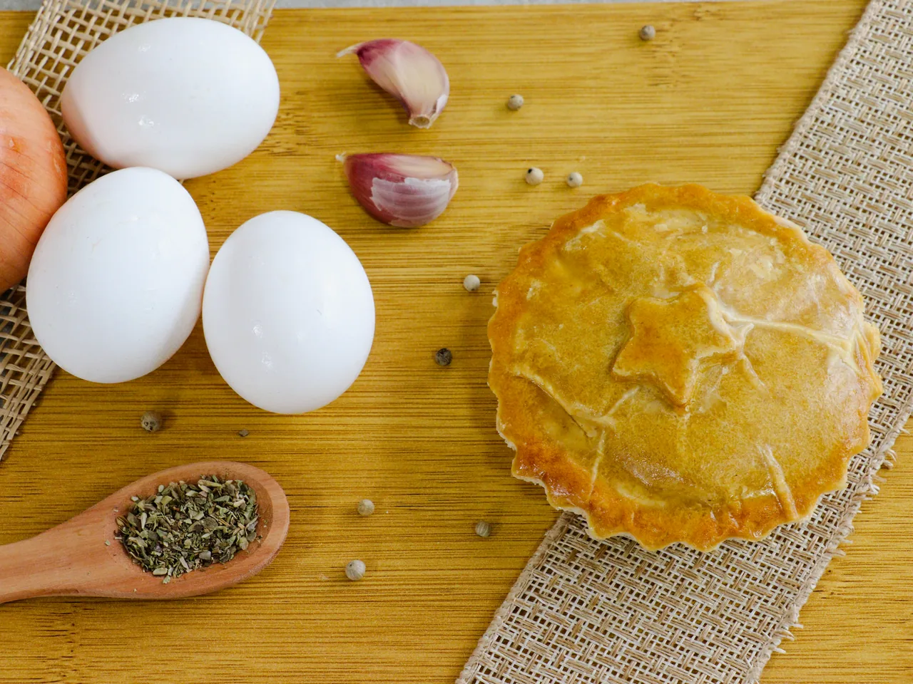

Casa
Casa
Caseirinhos
O sabor daquela comida que lembra casa, agora com a praticidade que a sua rotina precisa.
Conhecer CaseirinhosConheça o portfólio Light Food Way e encontre as opções que mais combinam com a sua rotina.
Casa
O sabor daquela comida que lembra casa, agora com a praticidade que a sua rotina precisa.
Conhecer Caseirinhos Aves
Aves
Opções com frango para deixar suas refeições práticas, saborosas e variadas.
Conhecer linha Frango Carnes
Carnes
Pratos com carne bovina para quem gosta de refeições saborosas e cheias de opções.
Conhecer linha Bovina Do mar
Do mar
Opções com peixe para variar o cardápio com praticidade.
Conhecer linha Peixe Massas
Massas
Massas saborosas para transformar uma refeição prática em um momento ainda mais gostoso.
Conhecer Massas Treino
Treino
Opções para quem treina, busca praticidade e quer facilitar a organização das refeições dentro da rotina.
Conhecer linha Maromba Sem carne
Sem carne
Opções sem carne para quem busca variedade e diferentes possibilidades para a alimentação.
Conhecer linha Veggie Quentinho
Quentinho
Uma opção prática e saborosa para aqueles dias em que tudo o que você quer é uma refeição quentinha.
Conhecer Sopas
BebidasOpções refrescantes para acompanhar sua refeição ou fazer parte de diferentes momentos do seu dia.
Conhecer Sucos
ExtrasPorque praticidade também combina com aquele momento de comer algo diferente. Opções para compartilhar, matar a fome ou simplesmente aproveitar.
Conhecer opçõesCada linha deve receber foto real do produto, descrição completa, lista de produtos e informações relevantes (peso, modo de preparo, informações nutricionais), conforme validação da área técnica.
Encontre uma Light Food Way perto de você e descubra suas próximas refeições favoritas.